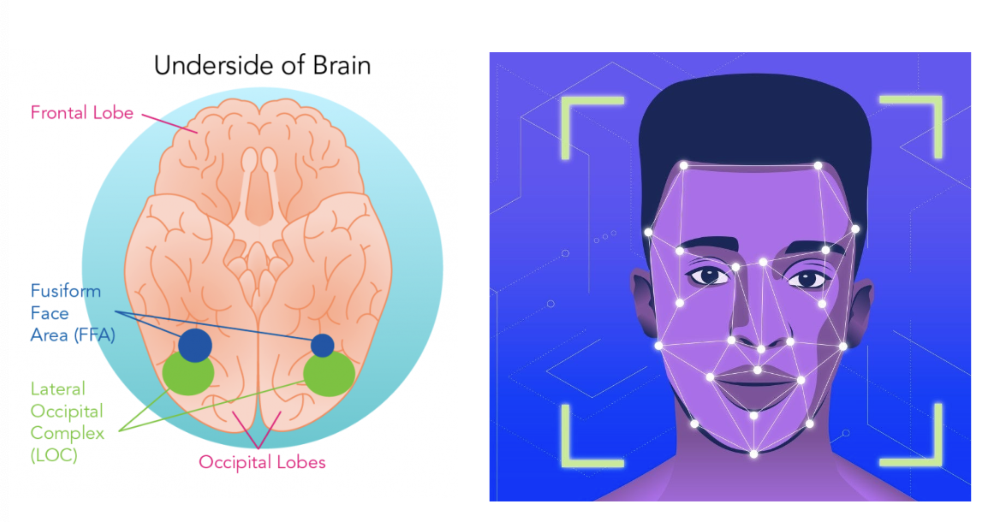

There’s a Special Part of the Brain Just for Recognizing Faces
Background & Research
We naturally identify faces and instantly respond emotionally to the faces we recognize.
If you recognize a friend, your brain responds positively, if you see a mean stranger you may respond
with
fear or anger
The skill to recognize faces is developed as infants and develops over a lifetime
In infants, the FFA may not show the same level of specialization, but it refines and becomes more
distinct
as they gain more experience with faces, suggesting a learning and developmental component in its
functionality.
The Fusiform Face Area is a small section of the brain near the base of the skull that
responds more
strongly to faces than other objects.
It is believed the FFA is specialized in identifying faces due to this
There have been recently disproven hypotheses that FFA prefers smoothed objects (spheres, etc) over
objects
with corners (blocks, pyramids, etc.)
Recently noted that the same area of the brain is activated in individuals who have been blind
since
birth and feel a 3-D model of a face
FFA is not limited to visual or physical cues to be activated, hence it’s disconnection from the visual
cortex in the brain
Facial recognition involves a network of brain regions, including OFA, FFA, and STS
The occipital face area (OFA), superior temporal sulcus (STS), and amygdala all contribute to different
aspects of facial processing
Aspects of facial processing include facial features, emotional expression interpretation, and
associating
emotions with recognized faces.
Research indicates that abnormalities or impairments in the Fusiform Face Area are associated
with
various neurological conditions.
For example, individuals with prosopagnosia (the inability to recognize familiar faces) often show
anomalies
in the FFA
This implies that other neurological conditions may also be linked to FFA and, in turn, have a
connection to
facial recognition issues
Key Takeaways:
When using images on interfaces, the subjects of the photo will be quickly recognized
as a face, engaging the FFA
This means in websites/ applications, be conscious of how user’s knee-jerk reaction to an image may
affect their opinion of the site (using a controversial celebrity as a key branding point crating
unpleasant emotions)
Faces may be distracting in interfaces since an entire part of our brain is constantly
scanning for
other faces to recognize
Too many subjects may draw attention away from the content and towards the images
(particularly when the
images are not the focus of the page)
This could be considered an accessibility concern.
Instead of identifying pages by faces (if a certain character/actor’s image is being used as a link to
another page), allow for multiple forms of identification such as patterns or symbols - similar to the
accommodations for colorblindness
Celebrity Connection
Brad Pitt, a prominent Hollywood actor, has openly discussed his struggle with prosopagnosia, a condition also known as face blindness, which impairs his ability to recognize faces. The condition is associated with challenges in the fusiform face area (FFA) of the brain, a region specialized for facial recognition. In Pitt's case, this condition presents a struggle that goes beyond occasional social discomfort. It impacts his personal and professional life, creating barriers in forming and maintaining relationships. Recognizing fellow actors, crewmembers, or interviewers he has met before or distinguishing between different individuals can be perplexing and socially awkward. This neurological condition has prompted Pitt to adopt coping strategies, like focusing on other unique features or contextual cues (hair, sound of voice, etc.). His willingness to openly discuss his experiences with prosopagnosia raises awareness about the condition, offering support to others who may share similar challenges.
Celebrity Connection
Blum, Dani. "Prosopagnosia: Living with Face Blindness." The New York Times, 6 July 2022, https://www.nytimes.com/2022/07/06/well/mind/prosopagnosia-face-blindness.html. Accessed 8 July 2022. Callaway, H.G. "Functionalism, Consciousness, and Face Recognition." ResearchGate, https://www.researchgate.net/publication/359315113_Functionalism_Consciousness_and_Face_Recognition. Kanwisher, Nancy, and Galit Yovel. "The Fusiform Face Area: A Cortical Region Specialized for the Perception of Faces." National Library of Medicine, vol. Volume Number, no. Issue Number, 8 Nov. 2006, https://www.ncbi.nlm.nih.gov/pmc/articles/PMC1857737/ MIT News Office. "Fusiform Face Area in the Brain Responsible for Face Recognition Also Processes Objects in People Born Blind." MIT News, 26 August 2020, news.mit.edu/2020/fusiform-brain-faces-blind-082
